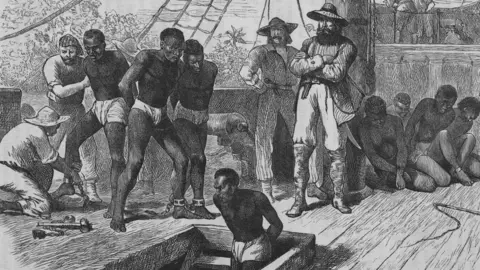

Lets take a look at how the nightmare began for these people.The history books tell us that after europeans discovered the new world and completed genociding the native population, they looked to west africa to aquire much needed muscle to build their empire in the new world. The majoraty of ships used to carry out this task were owned by jews who were the richest people in europe in this peroid thanks to that vast knoledge in finance and usery. Once again the jews are involved in somthing that has caused millions to suffer. The jews benifitted the most from the suffering and humualtion of the African slaves. Many of the salves died in the atlantic during the trip and the ones who made it to America would live as slaves.
civialrights movement was a time when the decendents of the slaves began to learn that they were still slaves even though thier masters told them that slavery was abolished 100 years agao.Malcom X was one of a kind, he found the guidence of god and tried to do the moral thing for his people. He is a man who understood freedom and in the end was slain by his enemy. True freedom is to die as one who submits to god alone. The story of Malcom X is a fasinating one, no matter who you are born from if you have fiath in God and follow his messenger you cannot fail.
although they have access to the knoledge to learn modern african americans are no better than thier ancestors when they first arrived in America. They can thank MArtin Luther king for tricking them into thinking they can live peacefully with their opressors. Intellegence is dangerous in the hands of a people with no morals, they will use it to corrupt the earth. Is There a bigger fool than one who uses the advantages given to him to corrupt? The most well know African americans are rappers, athletes and entertainers. as Brother Malcom X put it “These aren’t leaders. These are puppets and clowns that have been set up over the Black community by the white community and have been made celebrities and usually say exactly what they know the white man wants to hear.”